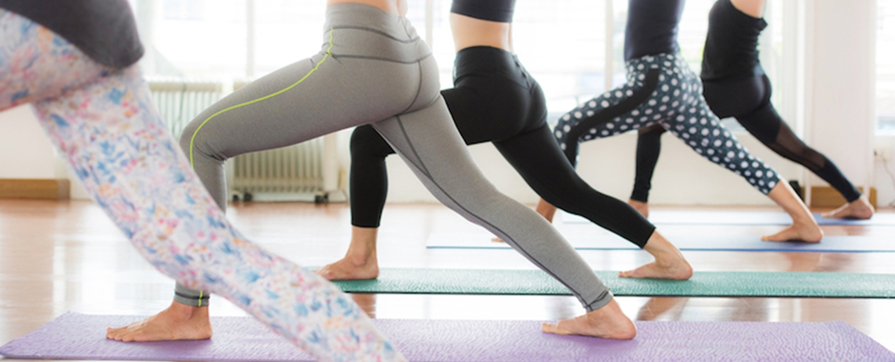
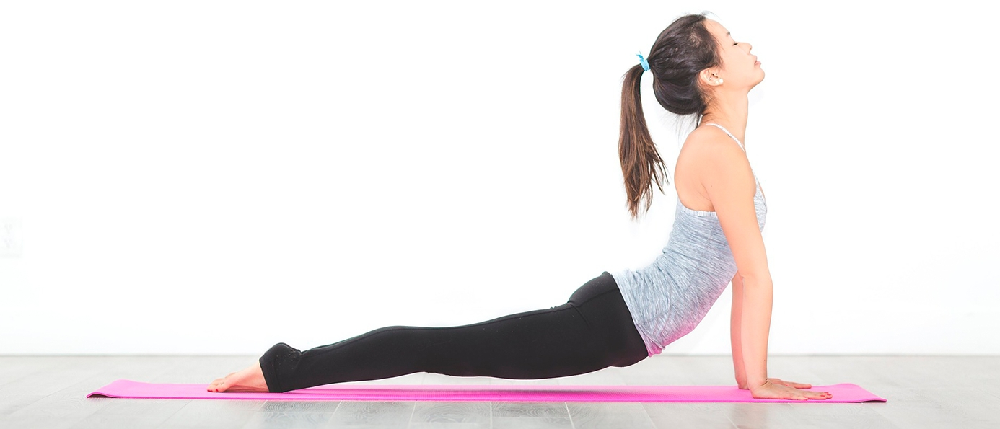
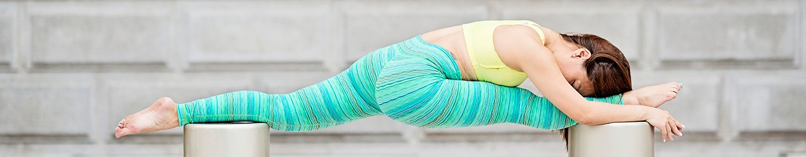

Populárne články

Ako kúpiť tie najlepšie nohavice na jogu
Začínate s jogou, alebo už máte dlhoročné skúsenosti? Bez ohľadu na úroveň vašich zručností vám pomôžeme urobiť správne rozhodnutie pri nákupe. Aby ste zo svojich jogových nohavíc vyťažili maximum, je kľúčové vybrať si taký model, ktorý najlepšie zodpovedá vášmu preferovanému štýlu cvičenia. Náš tím odborných testerov a autorov má desaťročia skúseností s cvičením a výučbou rôznych štýlov jogy – no aj napriek tomu počas dôkladného testovania získali nové poznatky o oblečení na jogu. Určite si prečítajte našu kompletnú recenziu, v ktorej nájdete porovnanie jednotlivých modelov, ktoré sme testovali stovky hodín. V tomto článku nájdete užitočné tipy a rady, ktoré vám uľahčia výber ďalších jogových nohavíc. Prevedieme vás rôznymi štýlmi, materiálmi, strihmi a funkciami – niektoré z nich možno oceníte, iné možno nie!

Dĺžka a štýl
Pri výbere oblečenia je prvou vecou, ktorú treba zvážiť, aká dĺžka a štýl sú pre vás – a pre typ jogy, ktorú cvičíte – najvhodnejšie. Nikto predsa nechce, aby mu oblečenie prekážalo pri vykonávaní jednotlivých pozícií, a zároveň nikto netúži po kúskoch, ktoré mu nesvedčia alebo sú nepohodlné.
Dlhé verzus kapri
V tejto recenzii sme testovali rôzne modely dlhých nohavíc a capri nohavíc. Capri nohavice končia niekde pod kolenom až do polovice lýtok, alebo okolo 45-50 cm vnútorného švu. Či uprednostňujete cvičenie v dlhých nohaviciach, capri nohaviciach alebo dokonca v krátkych nohaviciach, je vecou osobných preferencií, ako aj podnebia, v ktorom žijete, a typu jogy, ktorý cvičíte. Praktizujúci horúcu jogu často nosia čo najmenej oblečenia vo svojich vykurovaných štúdiách, zatiaľ čo vy ne opúšťate svoj dom v šortkách alebo capri nohaviciach uprostred zimy na severovýchode. Všetky modely capri nohavíc, ktoré sme testovali, sú dostupné aj v dlhých legínach.
Rovné alebo rozšírené nohavice verzus legíny
Niektorí ľudia si myslia, že ich nohy v legínach vyzerajú zvláštne alebo krátke a uprednostňujú vzhľad rovného strihu alebo rozšírených nohavíc. Iní uprednostňujú pocit legín počas namáhavých cvičení, pretože sa pri nich menej materiálu trepoce. Ďalší radi cvičia v legínach, ale rozšírené nohavice nosia pri vybavovaní pochôdzok alebo leňošení doma. Zatiaľ čo ste sa už pravdepodobne rozhodli, akú stranu uprednostňujete, my zvyčajne uprednostňujeme cvičenie v legínach oproti nohaviciam. Módne trendy tiež sťažujú nájdenie rovných a voľnobežných nohavíc, ak by to bola vaša preferencia. V našej aktualizovanej recenzii sme testovali iba jedny nohavice voľnobežného strihu a potvrdilo sa to v našej voľbe legín alebo capri nohavíc pre väčšinu hodín jogy. Pokiaľ ide o typ cvičenia, ktorý vykonávate, máme pre vás niekoľko tipov na kúpu perfektného páru, ktorý doplní váš štýl.
Jemný Hatha alebo Yin
Ak pri joge uprednostňujete pokoj a jemnosť, pri výbere oblečenia by pre vás mali byť prioritou pohodlie a to, ako vám sedí. Hľadajte voľnejšie strihy, dlhé modely a mäkké materiály (napríklad bavlnu alebo zmesi s bavlnou). Na tento štýl cvičenia sa nám osvedčili mimoriadne jemné kúsky, ako napríklad modely Beyond Yoga Spacedye High-Waist alebo Beyond Yoga Caught in the Midi. Keď zotrvávate v pozícii – napríklad v pozícii holuba – dlhšie než päť minút, potrebujete niečo, čo vás nebude obmedzovať ani tlačiť v oblasti stehien a bokov.
Základná joga
Ak navštevujete lekcie „1. úrovne“ s pestrou škálou pozícií, ktoré však nie sú príliš náročné či zložité, vyhovovať vám bude pravdepodobne akýkoľvek strih legín. Model Alo Goddess Ribbed Legging je skvelou voľbou pre tie, ktoré uprednostňujú skôr legíny než klasické nohavice. Chybu neurobíte ani výberom z našich produktov označených ako „najlepšia kúpa“ (Best Buy) – napríklad model 90 Degree, ktorý vyniká bezchybnými vlastnosťami, alebo Hofi High Waisted, ktorý je cenovo veľmi dostupný.
Vinyasa, Ashtanga alebo iné dynamické štýly
Ak plánujete vykonať tucet alebo viac sérií „pozdravov slnku“ a medzi jednotlivými pozíciami zaraďujete vinyasu, budete potrebovať legíny, ktoré sú priliehavé a priedušné. Hľadajte ľahké a priedušné modely, ako napríklad Alo Yoga Airbrush, 90 Degree by Reflex Powerflex, Prana Transform Capri alebo Lululemon Wunder Under Crop III. Na tento typ cvičenia vám dobre poslúžia aj modely Lululemon Align II a Lululemon Train.
Horúca joga
Ak máte radi jogu, pri ktorej sa poriadne zapotíte, musíte sa na to vhodne obliecť – a v tomto prípade zvyčajne platí, že menej je viac. Hľadajte kratšie nohavice (tzv. capri) alebo veľmi krátke šortky, ktoré umožnia vašej pokožke čo najlepšie dýchať. Niektoré z modelov, ktoré sme testovali, sú dostupné vo veľmi krátkych verziách, napríklad Onzie Side String Short. Ak počas cvičenia uprednostňujete o niečo viac zakryté telo, určite vás potešia modely Onzie Capri alebo Lululemon Train – náš víťaz v kategórii oblečenia na „hot jogu“. Sú také ľahké, že ani nebudete cítiť, že ich máte na sebe. Skvelou voľbou na „hot jogu“ či pilates sú aj nohavice Teeki Hot Pant, hoci počas cvičenia sme si ich museli pomerne často vyťahovať vyššie.
Záverečné úvahy
S rastúcou popularitou jogy a odvetvia zameraného na oblečenie na jogu je ľahké nechať sa pohltiť módnou stránkou tohto cvičenia. V konečnom dôsledku však ide pri joge o spoznanie svojho skutočného „ja“ – bez ohľadu na to, čo máte práve na sebe – a o dosiahnutie oslobodenia z kolobehu zrodenia a smrti. Hoci, samozrejme, vôbec nie je na škodu vyzerať pri tom úplne „OHMazing“.

Záverečné úvahy
S rastúcou popularitou jogy a odvetvia zameraného na oblečenie na jogu je ľahké nechať sa pohltiť módnou stránkou tohto cvičenia. V konečnom dôsledku však ide pri joge o spoznanie svojho skutočného „ja“ – bez ohľadu na to, čo máte práve na sebe – a o dosiahnutie oslobodenia z kolobehu zrodenia a smrti. Hoci, samozrejme, vôbec nie je na škodu vyzerať pri tom úplne „OHMazing“.

Ako odmerať veľkosť porcií
pomocou rúk
Prečítať článok

Stručný sprievodca intuitívnym
stravovaním
Prečítať článok

Vodná bilancia, význam
správnej hydratácie
Prečítať článok

Ako kúpiť tie najlepšie
nohavice na jogu
Prečítať článok

Ako byť viac
Disciplinovaný
Prečítať článok

5 wellness trendov, ktoré si zamilujete
Uvidíme sa v roku 2019
Prečítať článok

Kokosový olej na vlasy, ktoré
Žiari
Prečítať článok